Direction artistique de jeux vidéo
Comment donner envie d’entrer dans un jeu avant même d’en découvrir l’histoire ? 🎮✨
Cette page rassemble trois projets de jeux vidéo sur lesquels j’ai travaillé la direction artistique, les interfaces, les univers et les prototypes.
Chaque projet possède son propre carrousel pour découvrir les recherches et les rendus sans mélanger les univers.
Compétences
- Direction artistique
- Création visuelle
- UI et HUD
- Prototypage
- Animation
1. Tiny Thieves
Un univers de jeu vidéo construit autour d’une direction artistique, d’interfaces HUD et d’animations de gameplay.


 Voir COUPE sur YouTube
Voir COUPE sur YouTube
 Voir COURIR sur YouTube
Voir COURIR sur YouTube
 Voir JUMP sur YouTube
Voir JUMP sur YouTube
 Voir WAGON sur YouTube
Voir WAGON sur YouTube
2. Univers et prototypes
Un travail de recherche autour des univers, des personnages, des menus et des premières idées de gameplay.


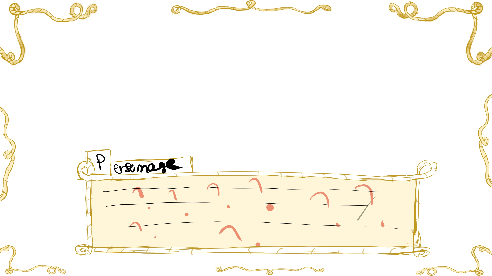

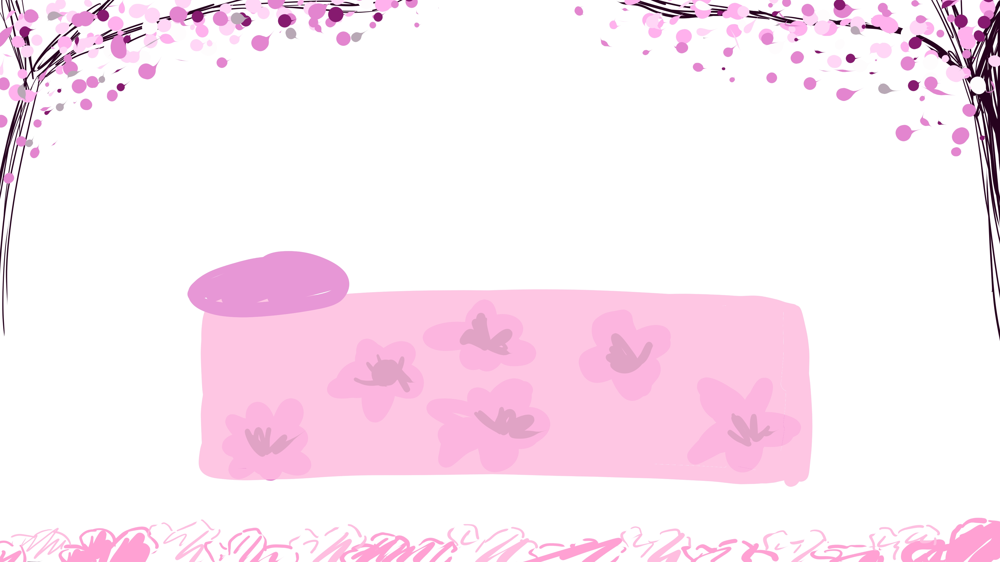
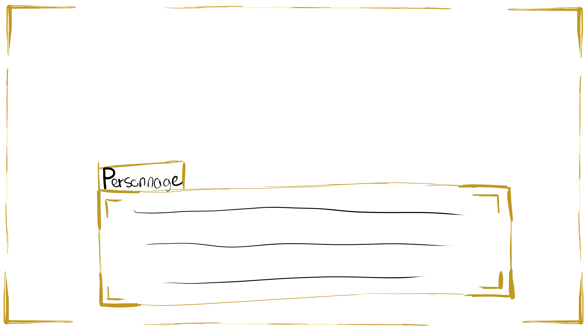
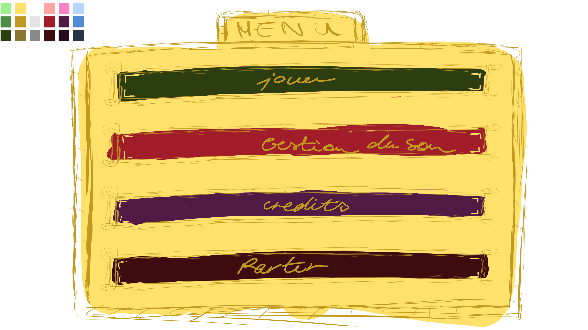
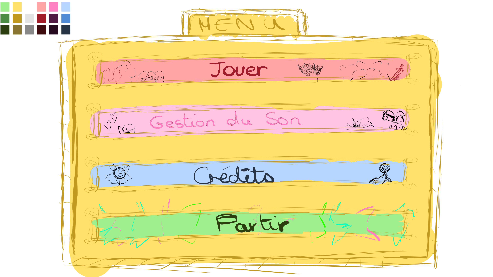
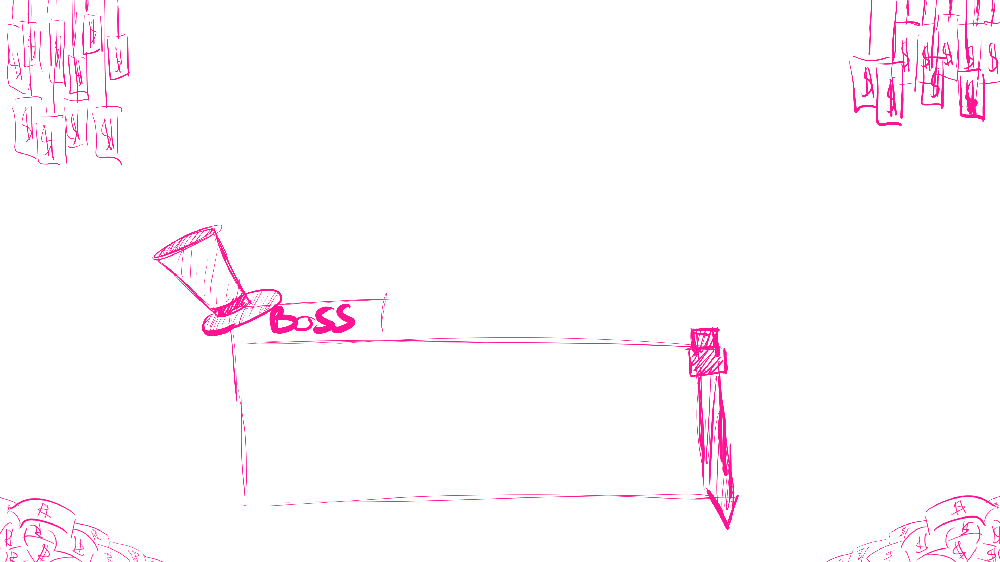
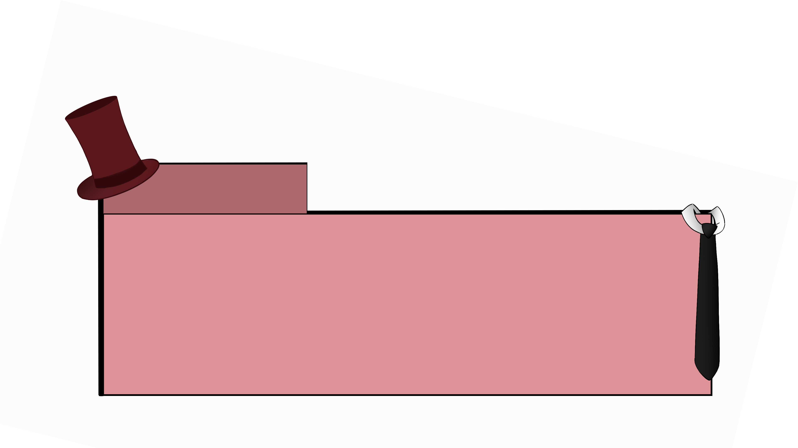

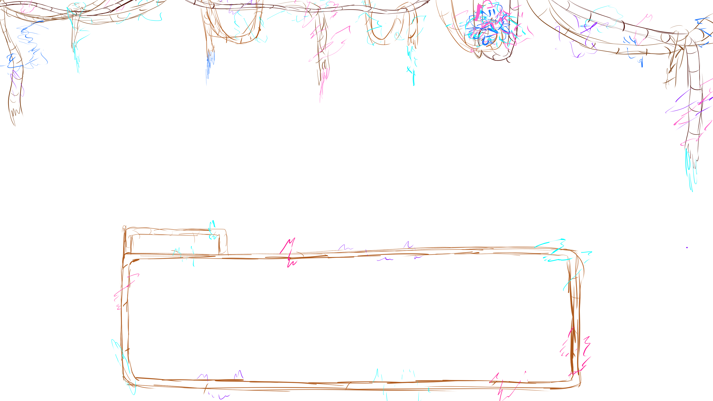
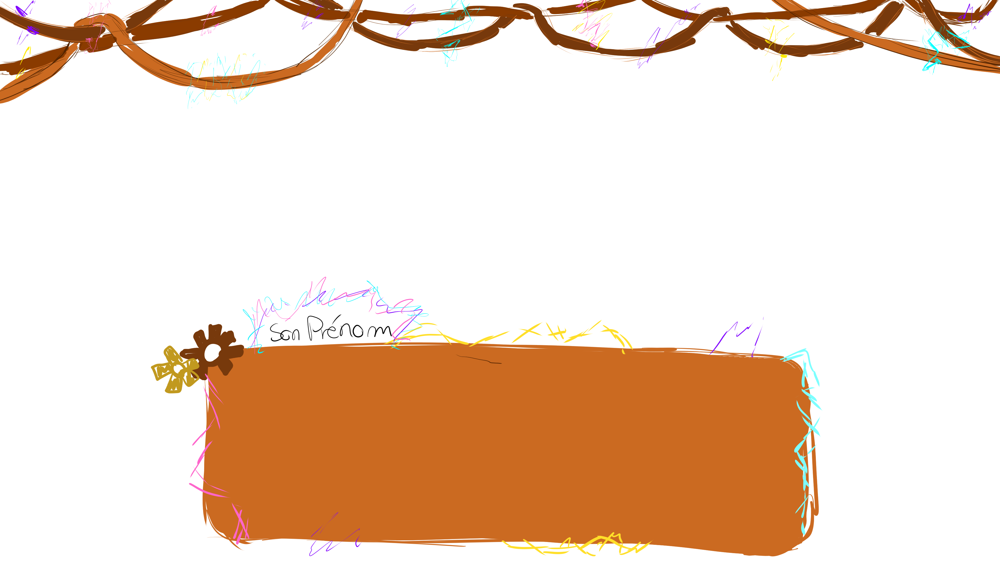
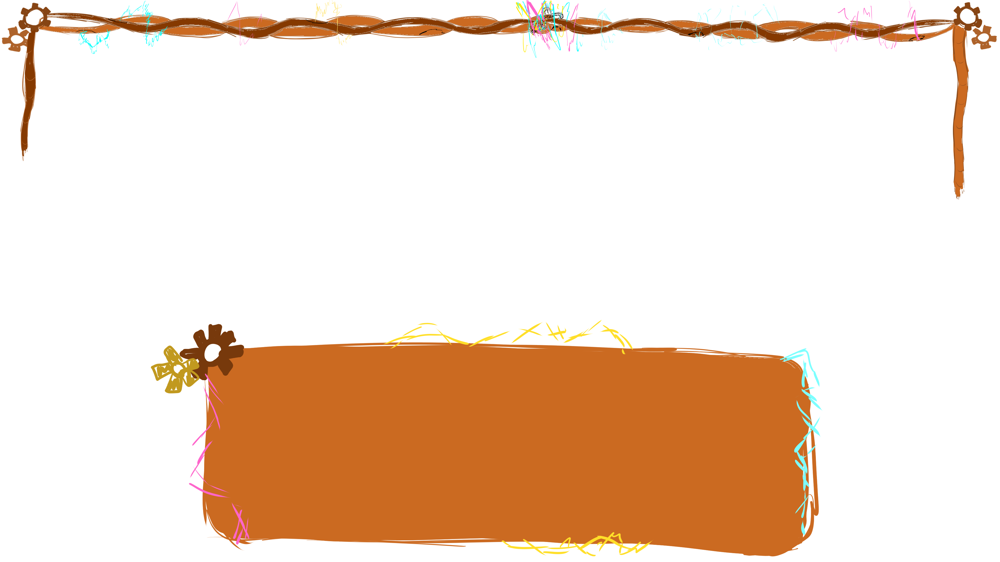
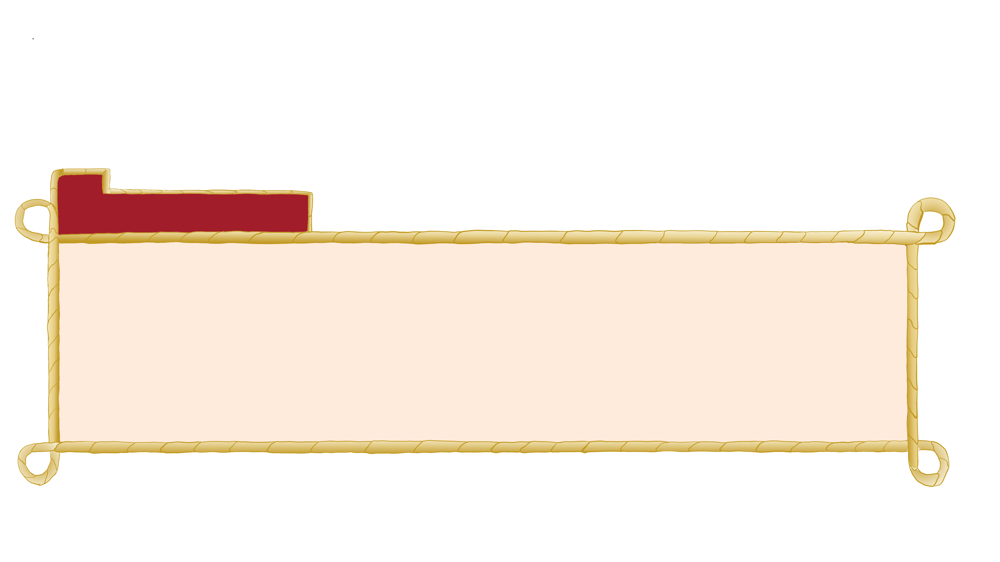
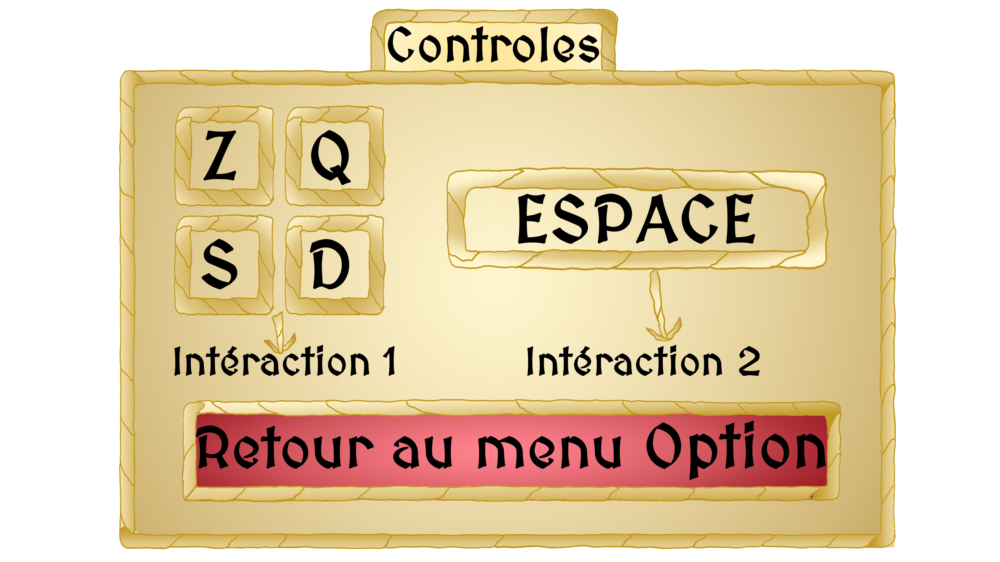
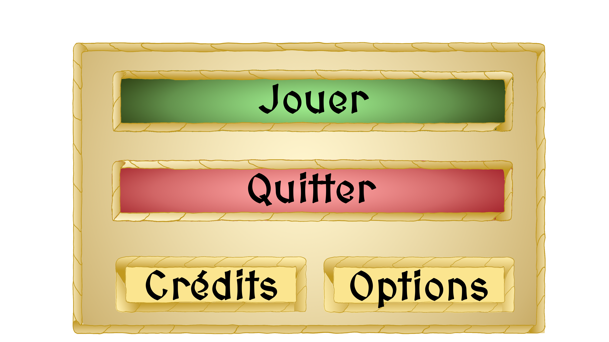
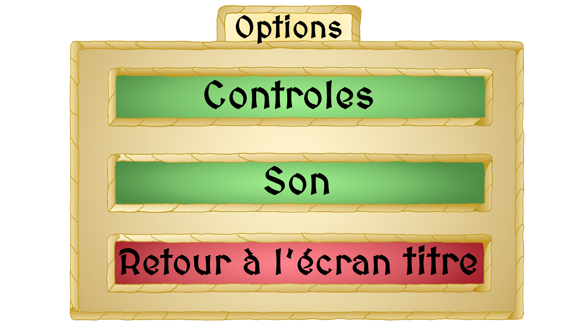
3. Unknown Memories
Une exploration de la direction artistique et de l’ambiance d’un jeu vidéo à travers un prototype développé sur Scratch.